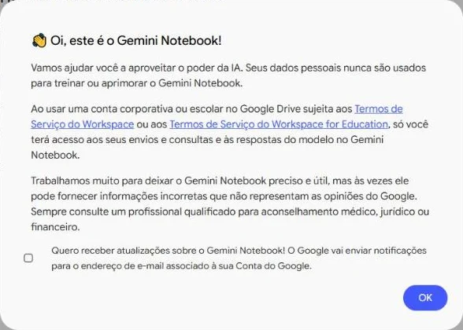
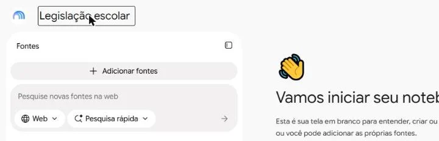
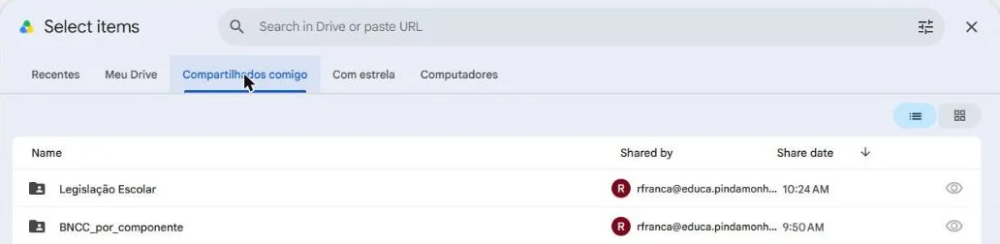
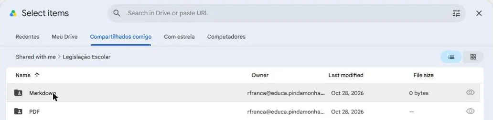
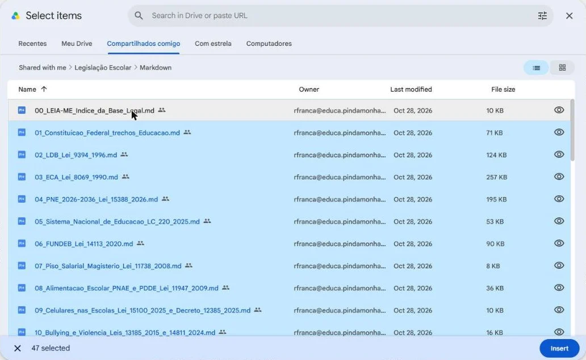
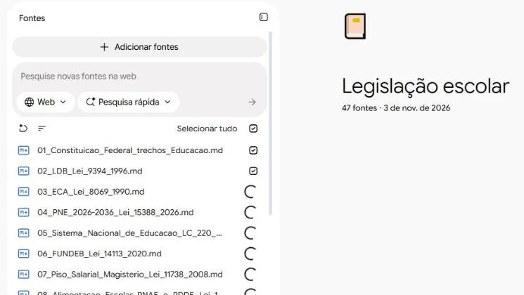
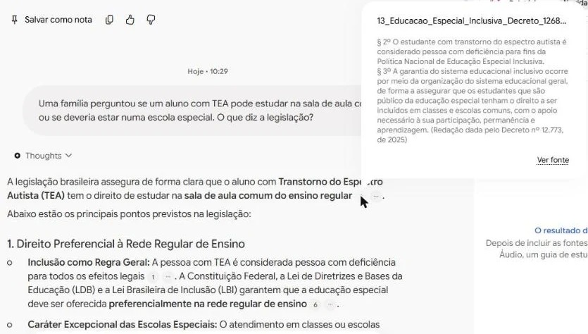

Sua biblioteca de legislação escolar
Monte o seu próprio ambiente de pesquisa com as leis da educação e faça perguntas com respostas que apontam o artigo de onde vieram.
Pasta Legislação Escolar
As principais leis, decretos e resoluções sobre educação, com o texto oficial.
Abrir a pasta no DriveO que tem na pasta?
A mesma legislação está em duas subpastas:
MarkdownTexto puro, sem formatação. É a que vamos usar: a IA lê melhor.PDFOs mesmos documentos, para ler ou imprimir.
São 47 arquivos: trechos da Constituição sobre educação, LDB, ECA, PNE, Fundeb, piso do magistério, alimentação escolar, celulares, bullying, inclusão, LGPD, BNCC, resoluções do CNE e leis municipais de Pindamonhangaba. O arquivo 00_LEIA-ME traz o índice completo.
Passo a passo
-
1
Abra a pasta da legislação
Confira se está logado no Drive com a sua conta @educa. Basta abrir a pasta uma vez: a partir daí, ela aparece entre os arquivos compartilhados com você.
Abrir a pasta Legislação Escolar -
2
Crie um notebook
Abra o Gemini Notebook com a mesma conta. Na primeira vez, aparece uma janela de boas-vindas: clique em OK. O Gemini Notebook já abre um notebook novo.

Se aparecer a lista de notebooks, clique em Novo notebook.
-
3
Dê um nome ao notebook
Clique em Notebook sem título, no topo, e escreva Legislação escolar. Depois clique em Adicionar fontes.

-
4
Escolha Drive
-
5
Abra a pasta Markdown
Na aba Compartilhados comigo, abra a pasta Legislação Escolar.

Depois abra a pasta Markdown.

-
6
Selecione todos os arquivos
Clique no primeiro arquivo e aperte Ctrl + A. A barra de baixo mostra 47 selected. Clique em Insert.

-
7
Espere as fontes carregarem
Cada arquivo aparece na coluna Fontes com uma rodinha girando. Quando todas viram uma caixa marcada, o notebook está pronto. Leva menos de um minuto.

-
8
Faça uma pergunta
Escreva na caixa de baixo, como faria no Gemini. Por exemplo:
Pergunta de exemploUma família perguntou se um aluno com TEA pode estudar na sala de aula comum ou se deveria estar numa escola especial. O que diz a legislação?
A resposta traz números pequenos depois das frases. Passe o mouse sobre um número para ver o trecho da lei que sustenta aquela frase.

-
9
Confira na fonte
Clique no número: a lei abre na coluna da esquerda, com o trecho marcado. Leia o artigo antes de usar a informação num documento.
O notebook fica guardado. Para voltar a ele, abra o Gemini Notebook e clique em Legislação escolar.